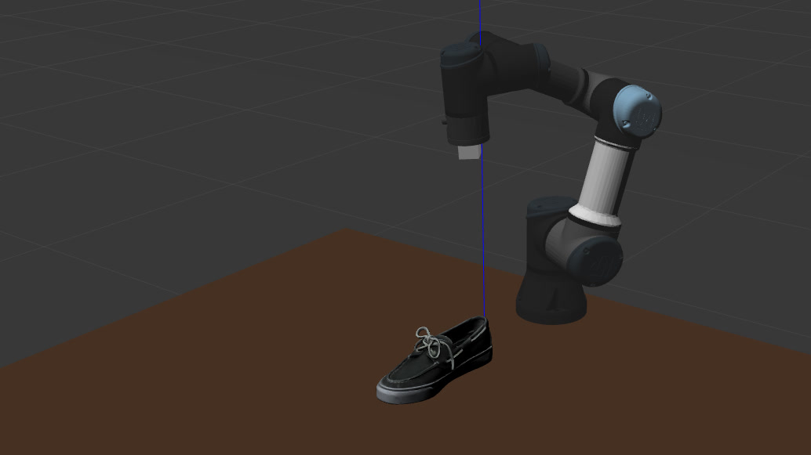

SIGMA Clermont · Mécanique innovante et robotique (IMR) · 2025–2026
Un robot peut-il numériser un objet souple en 3D ?
Notre équipe de huit étudiants a réalisé un prototype de numérisation robotisée pour l’inspection industrielle et le reconditionnement. Nous avons choisi une chaussure comme objet d’essai, car ses surfaces courbes masquent une partie de sa géométrie selon l’angle de vue. Un bras UR3e simulé a déplacé une caméra couleur et profondeur autour de la chaussure pour en reconstruire la forme à partir de plusieurs vues.

Simulation Gazebo utilisée pour planifier et tester les points de vue de la caméra (rapport d’équipe SIGMA Clermont, fig. 14b).
Ma contribution · Segmentation de la chaussure
J’ai entraîné dans Roboflow des modèles de segmentation d’instances YOLOv11 Nano pour identifier les pixels appartenant à la chaussure. Le jeu de données ci-dessous contient 1 551 images de différentes chaussures, orientations et conditions d’éclairage. Les masques prédits ont permis de conserver les données de couleur et de profondeur de la chaussure et de filtrer l’arrière-plan avant la reconstruction.
Jeu de données Roboflow v7 avec 1 095 images d’entraînement, 339 de validation et 117 de test. Cliquez sur l’image pour voir les masques en taille réelle.
Des vues de la caméra au modèle 3D
01
Déplacer la caméra autour de la chaussure
Dans Gazebo, nous avons fixé une caméra RGB-D simulée au poignet de l’UR3e. Nous avons commencé par des points de passage fixes, puis utilisé la couleur et la profondeur pour estimer le centre de la chaussure et générer des points de vue autour d’elle. MoveIt 2 a planifié le mouvement en gardant la caméra orientée vers la chaussure.
02
Isoler la chaussure dans la scène
Un nœud ROS 2 envoyait les images couleur au modèle hébergé sur Roboflow et appliquait les masques obtenus aux images de profondeur alignées. Nous avons utilisé RViz pour vérifier les images couleur, les cartes de profondeur, les repères de la caméra et les nuages de points.
03
Combiner les vues
L’arbre TF de ROS 2 fournissait la pose de la caméra à l’instant de chaque image. La chaîne de traitement Open3D s’appuyait sur ces poses pour fusionner les mesures de profondeur dans un volume 3D commun (TSDF), puis extraire un maillage triangulaire avec Marching Cubes et l’exporter au format PLY.
Ce qui a changé entre les deux essais
Lors des premiers essais, le bras se déplaçait plus vite que le service de segmentation en ligne ne traitait les images. Des points de vue manquaient, ce qui produisait des trous et des artefacts dans le maillage. Nous avons ralenti le balayage de 240° du bras simulé pour qu’il dure 110 secondes et limité l’inférence à une image par seconde. Le maillage obtenu restitue la forme générale de la chaussure, notamment son ouverture et sa semelle, avec quelques artefacts résiduels sur les bords.
Première reconstruction · Mars 2026
La rotation du premier maillage révèle des surfaces fragmentées et de gros éléments de l’arrière-plan.
Reconstruction améliorée · Avril 2026
Le maillage amélioré permet de voir la structure de la chaussure sous plusieurs angles. Quelques petits artefacts subsistent.
L’équipe a évalué qualitativement la reconstruction en simulation. Une prochaine étape serait d’exécuter toute la chaîne sur l’UR3e réel et de mesurer la précision par rapport à un scan de référence.
Équipe du projet
Alexis Rzepecki, Esli Brian Silva Maciel, Kauã Ferreira de Almeida, Marcos López-Loriente Parga, Mateus Stodolni de Aguiar, Matthieu Van Meer, Matthis Vasselin et Victor Soares Mesquita.
Encadrement par José Guerreiro, Mohammed Alkhatib et Youcef Mezouar. D’après le rapport d’équipe du Projet 2A de SIGMA Clermont, mai 2026.